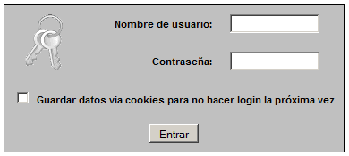
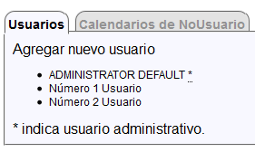
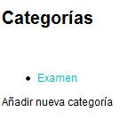
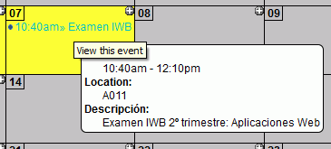

Entrar en phpMyAdmin como usuario root y crear un usuario de MySQL con nombre iwb_webcal_1, contraseña iwb_webcal_1 y base de datos iwb_webcal_1.
Abrir webcalendar/index.php en el navegador. Se inicia el proceso de instalación:
Step 1: Configuration Wizard Password
Contraseña: admin
password (again): admin
Step 2: Database settings
Entrar: iwb_webcal_1
Contraseña: iwb_webcal_1
Database Name: iwb_webcal_1
Step 4:
Create Default Admin Account: marcar casilla (se creará automáticamente un usuario
admin con contraseña admin)
Nombre de la aplicación: Mi calendario
Hacer una captura de pantalla donde se vea el formulario de entrada y guardarla como webcalendar_1.png:

2. Agregar usuarios
Entrar en WebCalendar como usuario admin y crear dos nuevos usuarios (se muestran los datos del primero, el segundo debe ser igual, pero con un 2 en vez de un 1):
Nombre de usuario: usuario_1
Nombre: Usuario
Apellido: Número 1
Dirección de email: usuario_1@example.com
Contraseña: usuario_1
Contraseña (de nuevo): usuario_1
Administración: No
Hacer una captura de pantalla donde se vean los usuarios y guardarla como webcalendar_2.png:

3. Crear categorías y eventos
Entrar en WebCalendar como usuario usuario_1
Crear la categoría Examen:

Crear el evento correspondiente a este examen: Examen IWB / Examen IWB 2º trimestre: Aplicaciones Web / A011 / 7 de febrero de 2012 / 10:40 / 1:30 / Público / Prioridad 5-Media / Categoría Examen.
Hacer una captura de pantalla donde se vea el calendario y guardarla como webcalendar_3.png:

4. Crear una copia de seguridad
Entrar en phpMyAdmin como usuario iwb_webcal_1, elegir la base de datos iwb_webcal_1 y exportar las tablas con el método rápido al fichero iwb_webcal_1-1.sql.
5. Crear un calendario compartido
Entrar en WebCalendar como usuario admin.
Crear un Calendario de NoUsuario:
ID de calendario: asir_2
Nombre: ASIR
Apellido: Segundo
Is public calendar: Sí
Crear una nueva vista:
Ver nombre: ASIR segundo
Ver tipo: Mes (en el mismo calendario)
Global: Sí
Usuarios: ASIR_Segundo
En Ajustes del sistema > Apariencia > Vista preferida, elegir ASIR segundo.
Entrar en WebCalendar como usuario_1 y crear el evento correspondiente al examen del viernes: Examen IWB / Examen IWB 2º trimestre: Aplicaciones Web / A011 / 10 de febrero de 2012 / 17:40 / 1:30 / Público / Prioridad 5-Media / Categoría Examen
Hacer una captura de pantalla donde se vea el evento del viernes y guardarla como webcalendar_4.png.
Entrar en WebCalendar como usuario_2 y hacer una captura de pantalla donde se vea el evento del viernes y guardarla como webcalendar_5.png.
6. Crear una copia de seguridad
Entrar en phpMyAdmin como usuario iwb_webcal_1, elegir la base de datos iwb_webcal_1 y exportar las tablas con el método rápido al fichero iwb_webcal_1-2.sql.